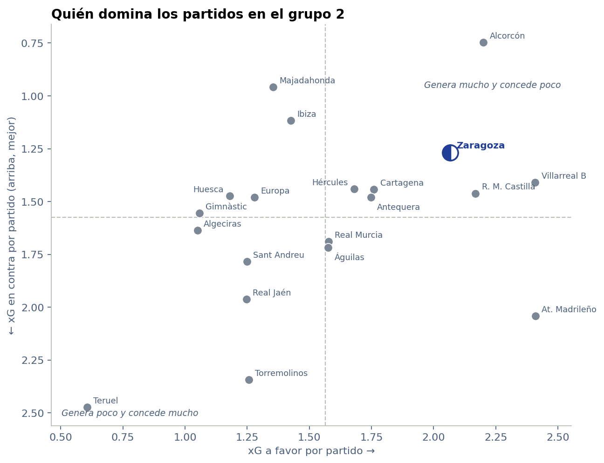
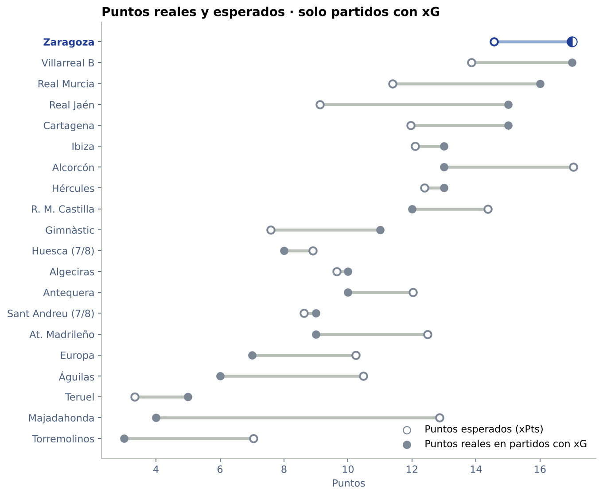
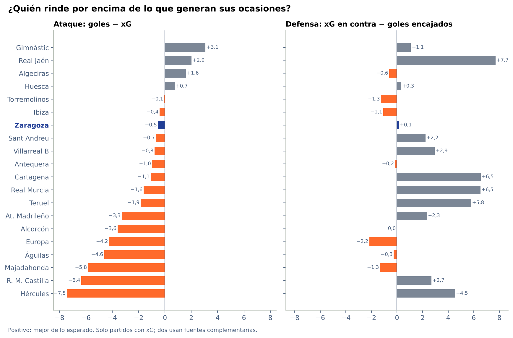
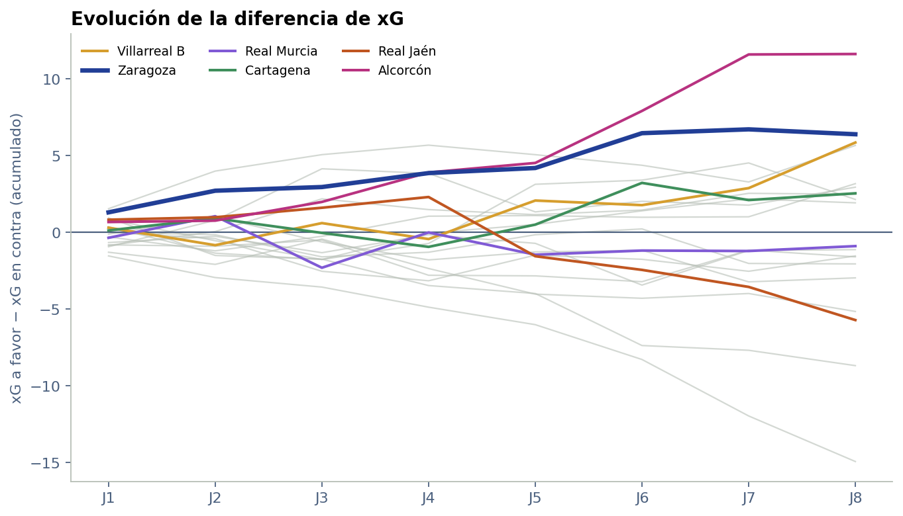
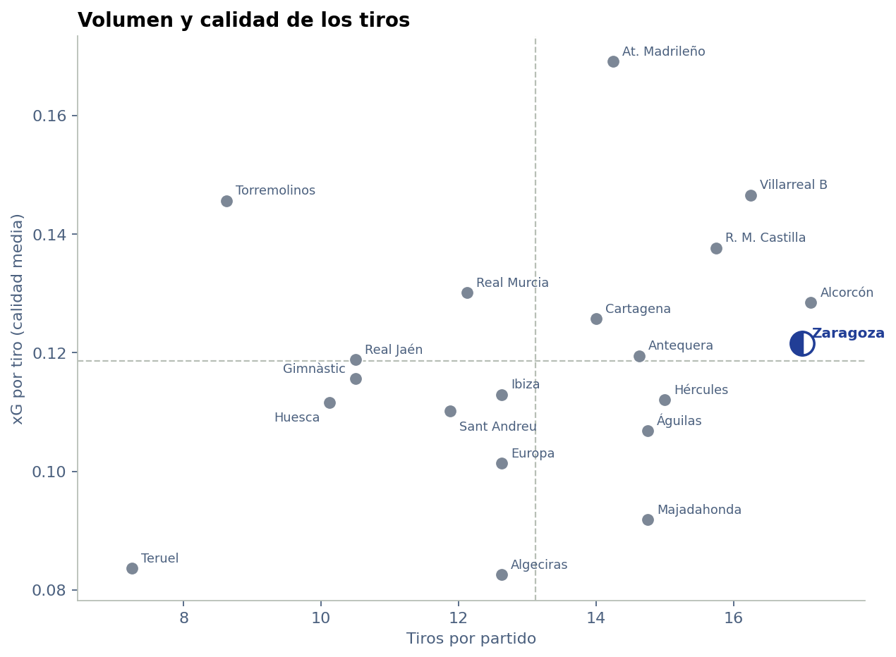
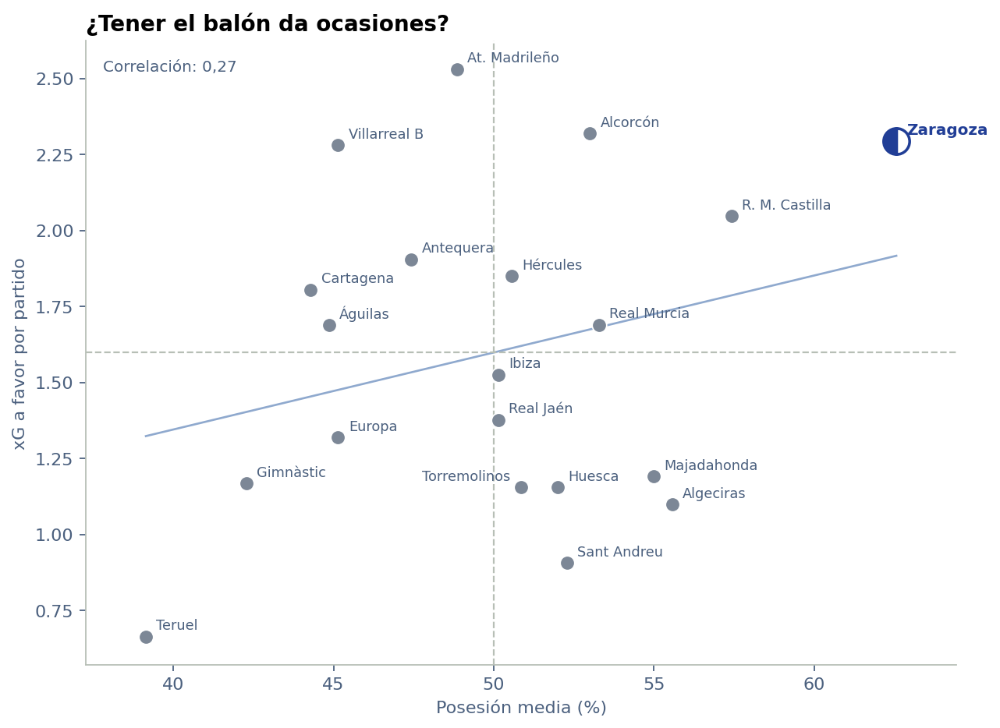

Proyectos / Real Zaragoza 2026/27 / Primera Federación · Grupo 2
Primera Federación · Grupo 2 · Resultados J8 · Estadísticas avanzadas J7
Primera Federación · Grupo 2
Clasificación y resultados hasta la jornada 8. La comparación de xG, puntos esperados, tiros y posesión conserva su corte en la jornada 7, con la cobertura indicada en cada apartado.
Actualizado el 20/10/2026 · Jornada 8 completa
Resultados y clasificación tras la jornada 8
El Villarreal B alcanza al Zaragoza con 17 puntos y lidera por diferencia de goles (+8 frente a +6). El Murcia queda tercero con 16; Cartagena y Real Jaén suman 15. La jornada deja 25 goles: seis victorias locales, una visitante y tres empates.
- Cartagena 3–0 CE Europa
- Alcorcón 1–1 SD Huesca
- CDA Águilas FC 1–2 UD Ibiza
- Villarreal B 2–0 CD Teruel
- Algeciras 2–0 Hércules
- Real Madrid Castilla 3–2 Antequera
- Gimnàstic 2–1 Atlético Madrileño
- Sant Andreu 2–2 Juventud Torremolinos CF
- Real Jaén 1–0 Rayo Majadahonda
- Real Murcia 0–0 Real Zaragoza
| # | Equipo | PJ | Pts | G | E | P | GF | GC | DG |
|---|---|---|---|---|---|---|---|---|---|
| 1 | Villarreal B | 8 | 17 | 5 | 2 | 1 | 17 | 9 | +8 |
| 2 | Real Zaragoza | 8 | 17 | 5 | 2 | 1 | 16 | 10 | +6 |
| 3 | Real Murcia | 8 | 16 | 5 | 1 | 2 | 11 | 7 | +4 |
| 4 | Cartagena | 8 | 15 | 4 | 3 | 1 | 13 | 5 | +8 |
| 5 | Real Jaén | 8 | 15 | 4 | 3 | 1 | 12 | 8 | +4 |
| 6 | Alcorcón | 8 | 13 | 3 | 4 | 1 | 14 | 6 | +8 |
| 7 | UD Ibiza | 8 | 13 | 4 | 1 | 3 | 11 | 10 | +1 |
| 8 | Hércules | 8 | 13 | 4 | 1 | 3 | 6 | 7 | -1 |
| 9 | Real Madrid Castilla | 8 | 12 | 3 | 3 | 2 | 11 | 9 | +2 |
| 10 | SD Huesca | 8 | 11 | 2 | 5 | 1 | 10 | 10 | +0 |
| 11 | Gimnàstic | 8 | 11 | 3 | 2 | 3 | 11 | 12 | -1 |
| 12 | Antequera | 8 | 10 | 2 | 4 | 2 | 13 | 12 | +1 |
| 13 | Algeciras | 8 | 10 | 3 | 1 | 4 | 11 | 13 | -2 |
| 14 | Atlético Madrileño | 8 | 9 | 2 | 3 | 3 | 16 | 14 | +2 |
| 15 | Sant Andreu | 8 | 9 | 2 | 3 | 3 | 9 | 10 | -1 |
| 16 | CE Europa | 8 | 7 | 2 | 1 | 5 | 6 | 14 | -8 |
| 17 | CDA Águilas FC | 8 | 6 | 1 | 3 | 4 | 8 | 14 | -6 |
| 18 | CD Teruel | 8 | 5 | 1 | 2 | 5 | 3 | 14 | -11 |
| 19 | Rayo Majadahonda | 8 | 4 | 1 | 1 | 6 | 5 | 9 | -4 |
| 20 | Juventud Torremolinos CF | 8 | 3 | 0 | 3 | 5 | 10 | 20 | -10 |
Fuentes: resultados de AS y clasificación en la web del Real Zaragoza. Los empates se muestran por diferencia de goles; la clasificación definitiva depende de los criterios reglamentarios.
Lo que dicen los datos
Lectura avanzada · J7
Estadísticas avanzadas hasta la jornada 7. Los resultados y la clasificación de la jornada 8 están actualizados arriba. El acceso a las estadísticas de Sofascore devuelve un error 403; ya se han contrastado los datos del Murcia–Zaragoza, Cartagena–Europa y Alcorcón–Huesca mediante capturas, pero faltan los otros siete encuentros de la jornada 8. Las cifras y gráficos siguientes mantienen su corte anterior.
Dato contrastado de la J8: Murcia–Zaragoza. 0,79–0,47 xG, 9–9 tiros y 51 %–49 % de posesión, en orden local–visitante. El Cartagena–Europa también está contrastado: 1,44–1,00 xG, 12–18 tiros y 44 %–56 % de posesión. Los datos de estos tres encuentros se conservan en una tabla descargable y no se suman a las comparaciones de abajo para mantener el mismo corte para todos los equipos.
Alcorcón–Huesca: más tiros, un xG similar. El 1–1 llegó con 19–6 remates y 55 %–45 % de posesión, pero el xG fue 1,36–1,33. El Alcorcón puso seis tiros a puerta y el Huesca dos; el gol visitante fue de penalti. La diferencia de volumen no equivale a una diferencia similar en la probabilidad agregada de marcar.
Comparación avanzada con corte en la jornada 7. Suma 16 puntos y sus puntos esperados son 13,6: va algo por encima, pero menos que la mayoría de los que le persiguen. Genera 2,29 xG por partido y concede 1,34, una diferencia de +0,96 que solo mejora el Alcorcón. Es además el equipo que más tira (18,1 tiros por partido) y el que más tiene el balón (62,6 %, cinco puntos más que el siguiente, el Castilla).
Donde más se le escapa es atrás. De cara a puerta está en lo esperado: 16 goles con 16,1 xG. En su portería ha encajado 10 goles con 9,4 xG en contra, algo más de lo que dicen las ocasiones. No es una diferencia grande, pero contrasta con equipos como el Real Murcia, el Hércules o el Cartagena, que encajan entre cinco y seis goles menos de lo esperado.
El Real Murcia, segundo, vive de su defensa. Lleva 15 puntos con 9,8 esperados: es el equipo que más rinde por encima de sus números (+5,2). Concede más xG del que genera (−0,17 por partido), pero ha encajado solo 7 goles con 13,1 xG en contra. Esa distancia me hace mirar cómo llegan los remates y cómo se resuelven; con el xG agregado no puedo atribuirla solo al portero ni asegurar que vaya a desaparecer. El partido de la jornada 8 ya se ha disputado (0-0); no está incorporado a estas cifras avanzadas.
El Alcorcón suma menos puntos que los que calcula el modelo. Con 15,7 puntos esperados es el mejor del grupo según el xG, y está quinto con 12. Es el que menos concede (4,7 xG en contra en siete partidos) y le falta acierto arriba: 13 goles con 16,2 xG. El 4-4 de la jornada 7 del Zaragoza fue ante el Atlético Madrileño; todavía no sirve como comparación directa con el Alcorcón.
Los que se quedan cortos de cara a puerta. El Hércules ha marcado 6 goles con 13,0 xG (−7,0) y aun así es cuarto gracias a su defensa. El Castilla (−6,3) y el Águilas (−4,8) también están muy por debajo. Por puntos, el caso más llamativo es el Rayo Majadahonda: 4 puntos reales con 10,2 esperados, el que más se aleja hacia abajo.
Abajo, Teruel y Torremolinos. Son los dos que peor diferencia de xG tienen (−1,71 y −1,10 por partido), así que su posición no parece casualidad. El Teruel es además el que menos tira (7,1 por partido) y el que menos posesión tiene (39 %).
Tener el balón no basta. La relación entre posesión y xG en el grupo es débil (correlación de 0,27). La diferencia de xG por partido explica mucho mejor la clasificación (0,61 con los puntos), aunque con siete jornadas todavía hay mucho ruido: un par de partidos con buen o mal acierto mueven bastante a cualquier equipo.
Clasificación ampliada
La tabla, con xG · J7
Ordenada por puntos, diferencia de goles y goles a favor. xPts: puntos esperados según el xG de cada partido. Dif.: puntos reales menos esperados.
| # | Equipo | PJ | Pts | xPts | Dif. | Goles | xG | xG dif./PJ | Tiros/PJ | xG/tiro | Posesión |
|---|---|---|---|---|---|---|---|---|---|---|---|
| 1 | Real Zaragoza | 7 | 16 | 13,6 | +2,4 | 16–10 | 16,1–9,3 | +0,96 | 18,1 | 0,13 | 63 % |
| 2 | Real Murcia | 7 | 15 | 9,8 | +5,2 | 11–7 | 11,8–13,1 | −0,17 | 12,6 | 0,13 | 53 % |
| 3 | Villarreal B | 7 | 14 | 13,3 | +0,7 | 15–9 | 13,7–9,7 | +0,67 | 15,9 | 0,14 | 45 % |
| 4 | Hércules | 7 | 13 | 11,3 | +1,7 | 6–5 | 13,0–10,8 | +0,31 | 16,1 | 0,11 | 51 % |
| 5 | Alcorcón | 7 | 12 | 15,7 | −3,7 | 13–5 | 16,2–4,7 | +1,66 | 16,9 | 0,14 | 53 % |
| 6 | Cartagena | 7 | 12 | 10,3 | +1,7 | 10–5 | 12,6–10,5 | +0,30 | 14,3 | 0,13 | 44 % |
| 7 | Real Jaén | 7 | 12 | 8,9 | +3,1 | 11–8 | 9,6–13,2 | −0,51 | 11,0 | 0,13 | 50 % |
| 8 | Antequera | 7 | 10 | 11,8 | −1,8 | 11–9 | 13,3–8,8 | +0,65 | 15,1 | 0,13 | 47 % |
| 9 | SD Huesca | 7 | 10 | 10,6 | −0,6 | 9–9 | 6,9–9,0 | −0,34 | 10,7 | 0,10 | 52 % |
| 10 | UD Ibiza | 7 | 10 | 10,8 | −0,8 | 9–9 | 10,7–8,1 | +0,36 | 13,0 | 0,12 | 50 % |
| 11 | Atlético Madrileño | 7 | 9 | 10,2 | −1,2 | 15–12 | 17,7–16,0 | +0,25 | 14,0 | 0,18 | 49 % |
| 12 | Real Madrid Castilla | 7 | 9 | 11,7 | −2,7 | 8–7 | 14,3–11,1 | +0,47 | 15,6 | 0,13 | 57 % |
| 13 | Sant Andreu | 7 | 8 | 7,2 | +0,8 | 7–8 | 4,5–8,7 | −0,84 | 10,0 | 0,11 | 52 % |
| 14 | Gimnàstic | 7 | 8 | 6,7 | +1,3 | 9–11 | 7,0–9,3 | −0,39 | 10,9 | 0,13 | 42 % |
| 15 | Algeciras | 7 | 7 | 6,0 | +1,0 | 9–13 | 6,6–11,0 | −0,73 | 12,4 | 0,09 | 56 % |
| 16 | CE Europa | 7 | 7 | 9,2 | −2,2 | 6–11 | 9,2–10,4 | −0,17 | 11,9 | 0,11 | 45 % |
| 17 | CDA Águilas FC | 7 | 6 | 9,1 | −3,1 | 7–12 | 11,8–13,0 | −0,17 | 14,7 | 0,11 | 45 % |
| 18 | CD Teruel | 7 | 5 | 3,2 | +1,8 | 3–12 | 4,7–16,6 | −1,71 | 7,1 | 0,09 | 39 % |
| 19 | Rayo Majadahonda | 7 | 4 | 10,2 | −6,2 | 5–8 | 8,3–7,3 | +0,14 | 13,7 | 0,09 | 55 % |
| 20 | Juventud Torremolinos CF | 7 | 2 | 6,1 | −4,1 | 8–18 | 8,1–15,8 | −1,10 | 8,6 | 0,13 | 51 % |
Gráficos
El grupo, en seis gráficos · J7
Qué equipos generan más de lo que conceden

Cada punto es un equipo. Hacia la derecha crea más ocasiones; hacia arriba concede menos, porque ese eje está invertido. Primero busco al Zaragoza y después lo comparo con los equipos que tiene cerca. Estar arriba a la derecha describe un buen equilibrio entre ataque y defensa, no garantiza ganar el siguiente partido.
Qué distancia hay entre resultados y ocasiones

El punto lleno marca los puntos reales y el hueco, los que calcula el modelo a partir del xG de cada partido. Me fijo en la distancia entre ambos: una separación grande invita a revisar los partidos. No significa que un equipo deba devolver puntos ni que el modelo diga quién mereció ganar.
Qué pasa al comparar goles y xG

A la izquierda comparo los goles marcados con el xG a favor. A la derecha, el xG en contra con los goles encajados. Una barra positiva significa más goles de los esperados arriba o menos goles recibidos atrás. Con este gráfico no puedo separar el trabajo del portero, el acierto de los rematadores y la variación propia de pocos partidos.
Cómo se construye la diferencia de ocasiones

La línea suma, jornada a jornada, el xG a favor menos el xG en contra. Si sube, el equipo ha generado más de lo que ha concedido; si baja, ha ocurrido lo contrario. Miro si la ventaja se construye de forma continuada o depende de un partido. El resto de equipos queda en gris para poder seguir a los destacados.
Tirar mucho y tirar bien son dos cosas distintas

Hacia la derecha hay más remates por partido; hacia arriba, mayor xG medio por tiro. Así puedo distinguir un equipo que acumula tiros de otro que llega menos, pero remata desde mejores situaciones según el modelo. El promedio puede ocultar diferencias grandes entre partidos.
Cuánto se convierte el balón en peligro

Cruzo la posesión media con el xG a favor por partido. Me interesa ver si tener más balón viene acompañado de mejores ocasiones. La línea muestra la tendencia del grupo; no demuestra que aumentar la posesión vaya a producir más goles.
Cómo está hecho
Método y límites
- Datos de Sofascore de los 70 partidos jugados del grupo, en grupo2_partidos.csv (una fila por equipo y partido).
- Los puntos esperados suponen que los goles de cada equipo siguen una distribución de Poisson con media igual a su xG. Es una aproximación: no tiene en cuenta el marcador ni cómo cambia un partido después de un gol.
- Sofascore no da el xG de tres partidos. En esos cuento los puntos reales como esperados y no entran en las medias de xG.
- Con 7 jornadas, una racha buena o mala de cara a puerta pesa mucho. Estas cifras describen lo que ha pasado; no predicen la clasificación final.
- La tabla ordena los empates por diferencia de goles. El reglamento usa antes el enfrentamiento directo, así que algún puesto puede no coincidir con la clasificación oficial.